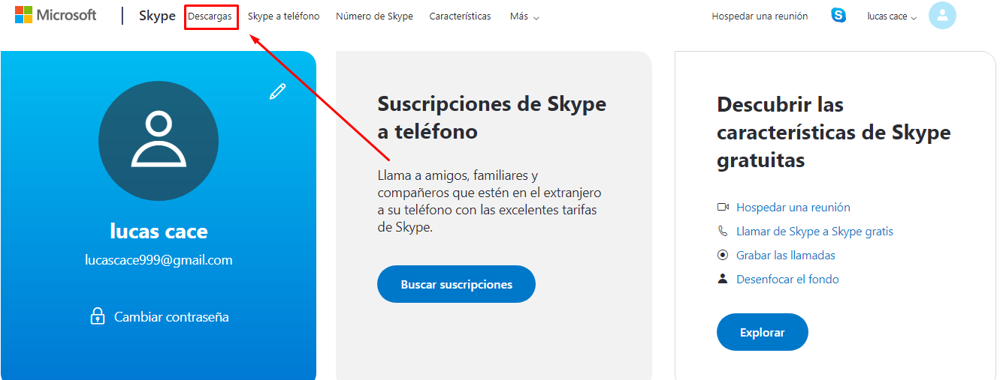
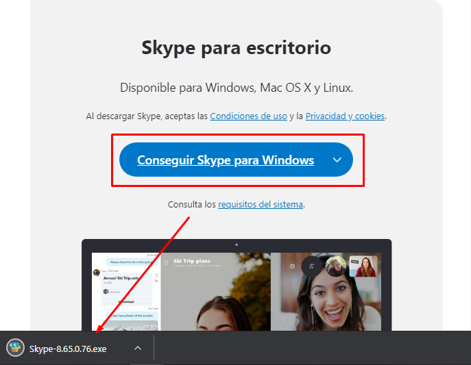

Skype es un software que permite que todo el mundo se comunique. Millones de personas y empresas ya usan Skype para hacer llamadas y videollamadas gratis individuales y grupales, enviar mensajes instantáneos y compartir archivos con otras personas que usan Skype. Puedes usar Skype en lo que mejor se adapte a tus necesidades: en tu teléfono móvil, PC o tableta.
Skype se puede descargar gratis y es fácil de usar.
Además, con un poco de dinero, puedes hacer mucho más: llamar a teléfonos y enviar mensajes SMS. Puedes pagar a medida que lo usas o comprar un plan, lo que prefieras. Y en el mundo de los negocios, esto significa que puedes reunir a todo tu grupo de trabajadores, socios y clientes para hacer lo que necesites.
Características
Skype se puede instalar en multitud de equipos electrónicos (incluso televisiones o videoconsolas ya preparadas). Ello permite la comunicación entre usuarios, independientemente del lugar donde se encuentren (el trabajo, el hogar, en la calle).
Para llamadas de audio utilizando la conexión de Internet, Skype es gratuito y permite añadir a la llamada hasta 25 personas.
Para llamadas de videoconferencia:
Skype es gratuito para la conexión entre dos personas.
Si queremos utilizarlo para conectarnos por videoconferencia tres o más personas (hasta un máximo de 10), al menos uno de los participantes debe adquirir lo que Skype denomina Cuentas Premium. Existe la posibilidad de comprarla para un sólo día.
Ventajas
• Skype es fácil y rápido de instalar.
• Llamadas telefónicas gratuitas a otros usuarios de Skype en cualquier parte del mundo.
• Funciona con todos los cortafuegos, NAT y router. Nada que reconfigurar.
• Las llamadas con Skype tienen una alta calidad de sonido y son altamente seguras.
• Skype funciona en la mayoría de los equipos: Windows, Mac OS X, Linux y Pocket Out.
Desventajas
• Tener contactos no deseados.
• Para llamar a teléfonos fijos se tiene que pagar.
• El buzón de voz tampoco es gratuito.
• Obtener algún virus al descargarlo al no obtenerlo de la página adecuada.
• Algunas veces ocurre la mala resolución del sonido y de video.
Como usarlo
- • Tener altavoces y micrófono: No todos los ordenadores están convenientemente equipados. Necesitamos un micrófono para hablar y altavoces para escuchar a nuestros interlocutores. Si queremos sacarle el máximo partido, lo mejor es tener también una webcam.
- • Descargarse el programa: Aunque de código cerrado, Skype es gratuito. Basta acudir a skype.es y desplazar el cursor sobre la barra de color azul que aparece en la parte superior de la pantalla (a la derecha del logo de la compañía). Al pasar sobre la categoría “Disfruta de Skype”, se desplegará una lista con todas las posibilidades de descarga. Figuran diferentes sistemas operativos (Windows, Linux y Mac), sistemas móviles (Android, iPhone y Symbian) y modelos de televisión (Samsung y Panasonic). Elegimos el que coincida con la plataforma desde la que pensamos usar el programa. 
- • Comprobar requisitos: Debemos elegir entre la versión gratuita y la versión Premium. Esta última cuesta 6,89 euros al mes y ofrece la posibilidad de organizar videoconferencias grupales (ideal para reuniones de trabajo: entre 3 y 10 personas podrán hablar, verse y escucharse desde sus ordenadores). Antes de seguir, es importante comprobar los “Requisitos del sistema” para saber si Skype funcionará en nuestro ordenador o móvil. Lo más importante son los requisitos de conexión a Internet y del sistema operativo.
- • Abrirse una cuenta: Se nos exige abrirnos una cuenta: introduciremos nuestro nombre, email y contraseña, y aceptaremos las condiciones de contrato.
- • Instalar el programa: Tras presionar el botón de descarga, se desplegará una ventana en la que elegiremos “Guardar” el archivo. Una vez completada la descarga, presionaremos “Ejecutar”. 
- • Añadir contactos: Al iniciar el programa siempre nos pedirá los datos de nuestra cuenta. Lo primero es buscar amigos para poder llamarlos y que nos llamen. La pestaña “Contactos” nos ofrece una lista de amigos que usan Skype. Para llenar la lista, que al principio estará vacía, debemos elegir “Encontrar amigos”. Skype solicitará acceso a las libretas de direcciones de una o varias de tus cuentas de correo (como prefieras: Outlook, Yahoo, Gmail…). Skype se compromete a no almacenar estas direcciones y a utilizarlas únicamente para comprobar si tus amigos tienen una cuenta abierta. También es posible encontrar a una persona en concreto introduciendo su nombre en el buscador.
- • Comprobar voz y vídeo: En el menú de “Ayuda” hay que presionar “Comprobar sonido”. Elegir “Altavoces” y pulsar botón verde: si oyes un efecto de sonido es que tus altavoces están listos. Si no, revisa la configuración de audio del sistema (normalmente un icono de un altavoz en la esquina inferior derecha de la pantalla). Elegir “Micrófono” y pronunciar algunas frases: si la barra verde se mueve es que tu micrófono funciona. Si no, selecciona el modelo de micrófono que estás utilizando de entre la lista que aparece en el menú desplegable junto a la barra de sonido. Elegir “Test Video”: si la webcam está instalada, tu cara aparecerá en la pantalla. Si no, revisa la configuración de vídeo de tu sistema.
- • Llamar a un contacto: Para poder hablar con tus contactos, primero es necesario que ellos aprueben tu solicitud de amistad. En tu lista de “Contactos” aparecerá marcado quién está conectado y quién desconectado. Encontrarás fácilmente el icono a pulsar para realizar la llamada. Hace falta que tu contacto la acepte para que podáis empezar a hablar.
- • Videoconferencia: Al pulsar el icono de la videocámara podrás ver a tu contacto y él podrá verte a ti (siempre que las webcams de ambos funcionen).
- • Llamar a un número: También hay una pestaña titulada “Llamar” en la que podrás teclear directamente el número de teléfono móvil o fijo con el que quieres hablar.